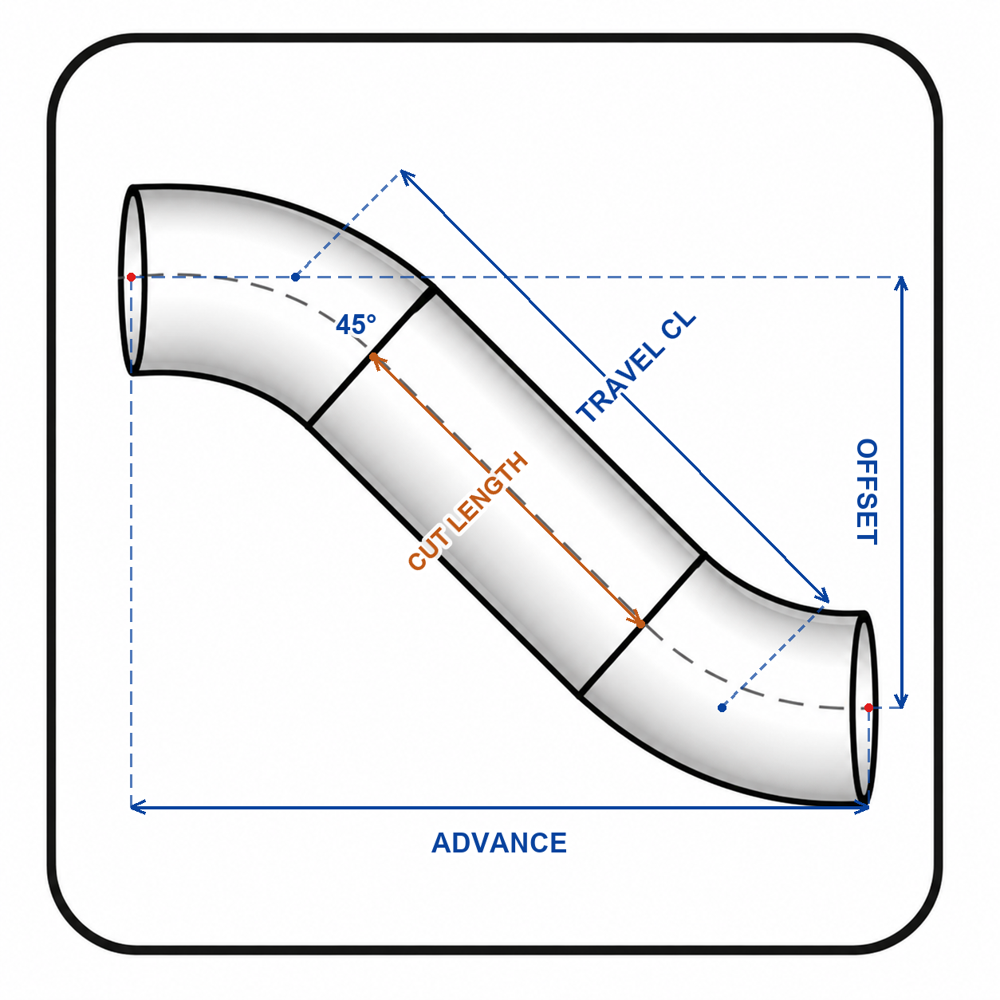

배관 계산 · 현장 배관 ISO 계산기 사용법
배관 옵셋 계산 방법
배관 오프셋 또는 옵셋을 계산할 때는 떨어진 거리, 진행 거리, 대각선 센터 길이와 실제 절단 길이를 구분해야 합니다. 현장 배관 ISO 계산기의 45도 옵셋과 롤링 옵셋 화면을 기준으로 설명합니다.
코리아피터 · 2026년 11월 11일 작성
OFFSET·ADVANCE·TRAVEL CL·CUT 구분하기
| 표시 | 의미 |
|---|---|
| OFFSET | 평행한 두 배관 센터 사이의 이격 거리 |
| ADVANCE | 진행 방향의 센터 거리 |
| TRAVEL CL | 옵셋을 잇는 대각선의 센터 길이 |
| CUT | 피팅 공제 등을 반영한 실제 파이프 절단 길이 |
45도 옵셋: 1.414를 곱한 값은 센터 길이입니다
45° 옵셋의 기하 관계는 ADVANCE = |OFFSET|, TRAVEL CL = |OFFSET| × √2입니다. 따라서 OFFSET이 300 mm이면 TRAVEL CL은 약 424.3 mm입니다.
424.3 mm를 그대로 파이프 절단 길이로 쓰지는 않습니다. 앱의 45도 옵셋은 선택한 배관 규격의 엘보 공제를 양쪽에 반영해 CUT를 표시합니다. 즉 이 화면에서는 CUT = TRAVEL CL − 엘보 TAKE-OFF × 2를 확인합니다.
- 2D 옵셋에서 45도 옵셋을 엽니다.
- 배관 사이즈와 단위를 고르고 옵셋 거리를 입력합니다.
- 계산을 실행한 뒤 OFFSET, TRAVEL CL, 엘보 공제와 CUT를 함께 확인합니다.
롤링 옵셋: 세 방향 치수로 계산합니다
롤링 옵셋은 한 평면의 높이 차이만으로 계산하지 않습니다. 앱에서는 E-W, N-S, U-D 세 방향의 치수를 입력하고 엘보 각도, 롤 각도, TRAVEL CL과 CUT를 확인합니다.
이 화면의 축 배치에서 실제 옵셋은 √(N-S² + U-D²), TRAVEL CL은 √(E-W² + N-S² + U-D²)입니다. 각 방향값은 화면 도해의 기준에 맞춰 넣습니다.
예를 들어 E-W 500 mm, N-S 300 mm, U-D 400 mm이면 실제 옵셋은 500 mm이고 TRAVEL CL은 약 707.1 mm입니다. 이 역시 센터 길이이므로 CUT는 엘보 공제와 함께 따로 확인합니다.
CUT가 음수로 나오면 어떻게 하나요?
센터 사이 거리가 피팅 두 개가 차지하는 치수보다 짧으면 직관을 넣을 여유가 없을 수 있습니다. 음수 결과를 양수로 바꾸거나 임의로 0으로 보고 절단하지 말고 배관 배치와 피팅 구성을 다시 검토합니다.
앱에는 짧은 옵셋을 검토하는 엘보 직결 옵셋 기능도 있습니다. 기성 45도 엘보 두 개와 직관을 쓰는 경우와 엘보를 가공해 직결하는 경우는 계산 기준이 다릅니다.
90도+45도·평행 다관은 해당 형상을 선택합니다
90도와 45도 엘보를 조합하거나 여러 관을 나란히 배치할 때는 단순한 45도 공식을 모든 구간에 적용하지 않습니다. 2D 옵셋의 90도+45도 또는 평행 다관 기능에서 형상과 필요한 치수를 확인하세요.
계산에 쓸 치수는 실제 센터 기준으로 확인하고, 자재 치수와 현장 도면을 대조합니다. 구간별 공제는 배관 절단 길이와 CL·CUT 사용법에서 이어서 볼 수 있습니다.
